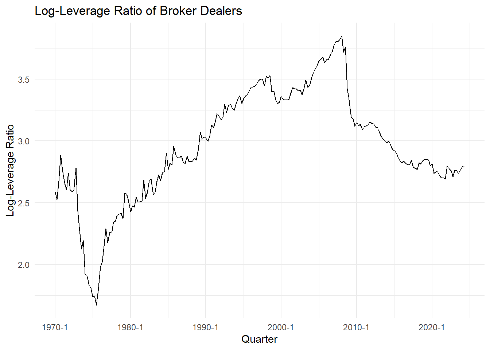
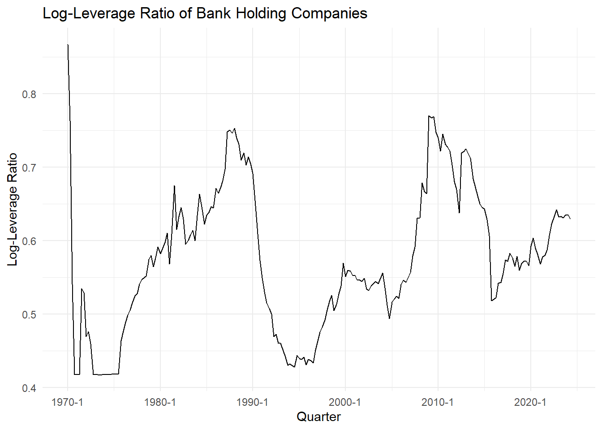
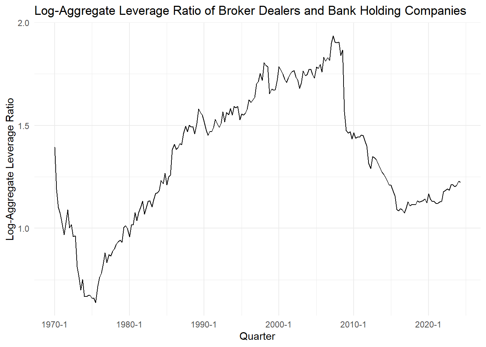
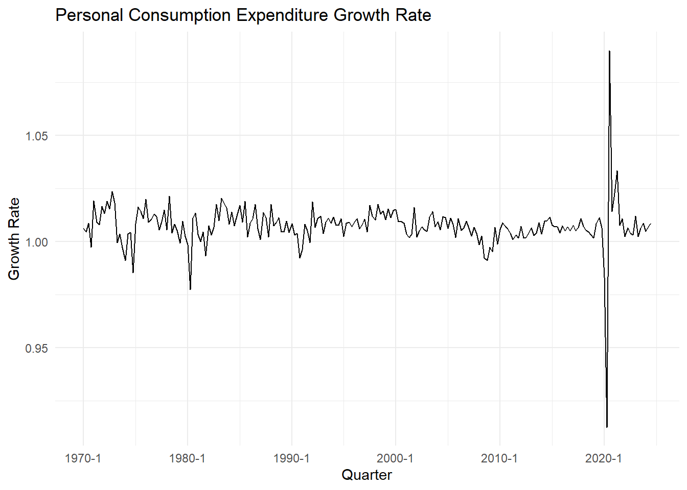

# Import all data files
process_data_directory(data_dir = data_dir)Master Seminar Paper Intermediary Asset Pricing
0 Synopsis
We will use this document to write our seminar paper. We will use the quarto package to write the paper in a literate programming style. This means that we will write the paper in a single document that includes both the content and the code used to generate the content. This will allow us to easily reproduce the results in the paper. Furthermore, we will submit a separate pdf file that only includes the text without the need to run the code. Moreover, we will use the quarto package to generate the pdf file where the code is hidden.
1 Introduction
In this paper, we will investigate the intermediary asset pricing model proposed by Sa Mai (2023) where a semi parametric approach was used in to model the heterogeneous intermediary stochastic discount factor (HI-SDF).
2 Data
First, let us check the data that we have available for our analysis.
2.1 Data Import
[1] "Successfully Loaded: change_to_date"
[2] "Successfully Loaded: data_dir"
[3] "Successfully Loaded: df_10_Portfolios_Prior_60_13"
[4] "Successfully Loaded: df_25_Portfolios_5x5"
[5] "Successfully Loaded: df_25_Portfolios_ME_INV_5x5"
[6] "Successfully Loaded: df_25_Portfolios_ME_OP_5x5"
[7] "Successfully Loaded: df_F-F_Benchmark_Factors_Quarterly"
[8] "Successfully Loaded: df_F-F_Research_Data_Factors"
[9] "Successfully Loaded: df_He_Kelly_Manela_Factors_And_Test_Assets"
[10] "Successfully Loaded: df_L.130"
[11] "Successfully Loaded: df_L.131"
[12] "Successfully Loaded: df_PCECC96"
[13] "Successfully Loaded: df_TB3MS"
[14] "Successfully Loaded: list_of_files"
[15] "Successfully Loaded: process_data_directory" 2.2 Data Cleaning
2.2.1 Broker Dealer (BD) - Leverage Ratio
For the broker dealers we are going to use the total financial assets and liabilities to calculate the leverage ratio.
### Assets
# Extract Total Assets and Total Liabilities and Equity for Broker Dealers
total_assets_bd <- df_L.130 %>% filter(`Descriptions:` == "Security brokers and dealers; total financial assets")
# Select the columns
total_assets_bd <- total_assets_bd %>%
select(-"Descriptions:", -"Unit:", -"Currency:", -"Unique Identifier:", -"Series Name:", -"Multiplier:")
# Replace ND with NA
total_assets_bd <- total_assets_bd %>%
mutate(across(everything(),
~ as.numeric(.)
)
)
# Total Assets into long format
total_assets_bd_long <- total_assets_bd %>%
pivot_longer(
cols = everything(),
names_to = "Quarter",
values_to = "Value"
) %>%
filter(Quarter >= "1970 Q1")
### Liabilities
# Extract Total Liabilities and Equity for Broker Dealers
total_liabilities_bd <- df_L.130 %>% filter(`Descriptions:` == "Security brokers and dealers; total liabilities")
# Select the columns
total_liabilities_bd <- total_liabilities_bd %>%
select(-"Descriptions:", -"Unit:", -"Currency:", -"Unique Identifier:", -"Series Name:", -"Multiplier:")
# Replace ND with NA
total_liabilities_bd <- total_liabilities_bd %>%
mutate(across(everything(),
~ as.numeric(.)
)
)
# Total Liabilities into long format
total_liabilities_bd_long <- total_liabilities_bd %>%
pivot_longer(
cols = everything(),
names_to = "Quarter",
values_to = "Value"
) %>%
filter(Quarter >= "1970 Q1")
# Calculate the leverage ratio
leverage_ratio_bd <- total_assets_bd / (total_assets_bd - total_liabilities_bd)
rm(df_L.130)Plot of the Log-Leverage of Broker Dealers:
Warning: The `trans` argument of `continuous_scale()` is deprecated as of ggplot2 3.5.0.
ℹ Please use the `transform` argument instead.
2.2.2 Bank Holding Company (BHC) - Leverage Ratio
For the bank holding companies we are going to use the total financial assets and liabilities to calculate the leverage ratio.
# Extract Total Assets and Total Liabilities and Equity for Bank Holding Companies
total_assets_bhc <- df_L.131 %>% filter(`Descriptions:` == "Holding companies; total financial assets")
# Select the columns
total_assets_bhc <- total_assets_bhc %>%
select(-"Descriptions:", -"Unit:", -"Currency:", -"Unique Identifier:", -"Series Name:", -"Multiplier:")
# Replace ND with NA
total_assets_bhc <- total_assets_bhc %>%
mutate(across(everything(),
~ as.numeric(.)
)
)
# Extract Total Liabilities and Equity for Bank Holding Companies
total_liabilities_bhc <- df_L.131 %>% filter(`Descriptions:` == "Holding companies; total liabilities")
# Select the columns
total_liabilities_bhc <- total_liabilities_bhc %>%
select(-"Descriptions:", -"Unit:", -"Currency:", -"Unique Identifier:", -"Series Name:", -"Multiplier:")
# Replace ND with NA
total_liabilities_bhc <- total_liabilities_bhc %>%
mutate(across(everything(),
~ as.numeric(.)
)
)
# Calculate the leverage ratio
leverage_ratio_bhc <- total_assets_bhc / (total_assets_bhc - total_liabilities_bhc)
#rm(df_L.131)Plot of the Log-Leverage of Bank Holding Companies:

2.2.3 Aggregate Leverage Ratio
We will calculate the aggregate leverage ratio for the broker dealers and bank holding companies. Defined as total assets BD and BHC over total equity.
# Calculate the aggregate leverage ratio
aggregate_leverage <- (total_assets_bd + total_assets_bhc) / (total_assets_bd + total_assets_bhc - total_liabilities_bd - total_liabilities_bhc)Plot the aggregate Leverage Ratio:

2.2.5 Personal Expenditure - Consumption Growth
We will calculate the consumption growth rate for the personal expenditure data.
# Calculate the consumption growth rate
df_pce_growth <- df_PCECC96 %>%
mutate(Quarter = as.yearqtr(DATE, format = "%Y-%m-%d")) %>%
select(-DATE, PCE = PCECC96) %>%
filter(Quarter >= "1969 Q4") %>%
mutate(pce_growth = PCE / lag(PCE) - 1) %>%
filter(row_number() != 1)
rm(df_PCECC96)Now we will plot the consumption growth rate:

2.2.6 Historical Return Data
We will calculate the historical return data for equity, non-equity, risk-free (i.e. treasury bill), commodities, CDS, options and FX data, as well as a combined portfolio.
## Equity Portfolios
# List the Dataframes
list_of_dataframes <- c(
"df_10_Portfolios_Prior_60_13",
"df_25_Portfolios_5x5",
"df_25_Portfolios_ME_INV_5x5",
"df_25_Portfolios_ME_OP_5x5"
)
# Change dataframes to date format
for (dataframe_name in list_of_dataframes) {
# Retrieve the dataframe by name
dataframe <- get(dataframe_name)
# Apply the function
modified_dataframe <- change_to_date(dataframe)
# Assign the modified dataframe back to its original name
assign(dataframe_name, modified_dataframe)
# Remove the modified dataframe from the environment
rm(modified_dataframe)
}
# Merge dataframes in the list of dataframes on date column
df_equity_monthly <- df_10_Portfolios_Prior_60_13 %>%
inner_join(df_25_Portfolios_5x5, by = "date") %>%
inner_join(df_25_Portfolios_ME_INV_5x5, by = "date") %>%
inner_join(df_25_Portfolios_ME_OP_5x5, by = "date")
# Make Returns decimal number
df_equity_monthly <- df_equity_monthly %>%
mutate(across(-date, ~ . / 100))
# Turn monthly returns into quarterly returns
df_equity <- df_equity_monthly %>%
mutate(Quarter = as.yearqtr(date, format = "%Y-%m-%d")) %>%
group_by(Quarter) %>%
summarise(across(-date, ~ prod(1 + .) - 1))2.2.7 More data may be added later here!
3 Estimation of the HI-SDF Model
In this section, we will estimate the HI-SDF model proposed by Sa Mai (2023).
First we will define the moment conditions and the sieve estimation of the conditional mean M(w_t).
# Starting values of Estimation
beta <- 0.99
gamma <- 10## Step 1: Set Up Sieve Basis Functions (Cubic B-Splines)
library(splines)
# Create basis functions for \psi_t and \phi_t
create_basis <- function(data, var, knots = 5) {
range_var <- range(data[[var]], na.rm = TRUE)
return(bs(data[[var]], degree = 3, knots = seq(range_var[1], range_var[2], length.out = knots), intercept = TRUE))
}
# Generate basis functions
basis_psi <- create_basis(data, "psi_t", knots = 5)
basis_phi <- create_basis(data, "phi_t", knots = 5)
# Create tensor product of basis functions
create_tensor_product <- function(basis_psi, basis_phi) {
n_psi <- ncol(basis_psi)
n_phi <- ncol(basis_phi)
tensor_product <- matrix(0, nrow = nrow(basis_psi), ncol = n_psi * n_phi)
col_idx <- 1
for (i in 1:n_psi) {
for (j in 1:n_phi) {
tensor_product[, col_idx] <- basis_psi[, i] * basis_phi[, j]
col_idx <- col_idx + 1
}
}
return(tensor_product)
}
basis_tensor <- create_tensor_product(basis_psi, basis_phi)
## Step 2: Sieve Minimum Distance Estimation of \Omega
# Define the objective function for SMD estimation
smd_objective <- function(params, basis_tensor, returns, consumption_growth, leverage, net_worth) {
beta <- params[1]
gamma <- params[2]
# Compute \Omega as a linear combination of basis functions
omega <- as.numeric(basis_tensor %*% params[-(1:2)])
# Compute the SDF m_t = beta * (C_t / C_t-1)^(-gamma) * \Omega
sdf <- beta * (consumption_growth^(-gamma)) * omega
# Compute residuals for the moment conditions
residuals <- sdf * returns - 1
# Return the sum of squared residuals
return(sum(residuals^2))
}
# Initial parameters: beta, gamma, and coefficients for \Omega
init_params <- c(0.99, 10, rep(0, ncol(basis_tensor)))
# Optimization for SMD estimation
optim_result <- optim(
par = init_params,
fn = smd_objective,
basis_tensor = basis_tensor,
returns = data$returns,
consumption_growth = data$consumption_growth,
leverage = data$phi_t,
net_worth = data$psi_t,
method = "BFGS"
)
# Extract estimated parameters
beta_hat <- optim_result$par[1]
gamma_hat <- optim_result$par[2]
omega_hat <- optim_result$par[-(1:2)]
## Step 3: GMM Estimation of Risk Prices
# Compute \Omega from the estimated parameters
omega_estimated <- as.numeric(basis_tensor %*% omega_hat)
# Compute \beta_j,c and \beta_j,\Omega for each asset
betas <- lapply(split(data, data$asset_id), function(asset_data) {
fit <- lm(returns ~ consumption_growth + log(omega_estimated), data = asset_data)
return(coef(fit))
})
betas <- do.call(rbind, betas)
# Cross-sectional regression for risk prices
cross_sectional_fit <- lm(avg_excess_return ~ betas[, "consumption_growth"] + betas[, "log(omega_estimated)"], data = data)
# Extract risk prices
lambda_c <- coef(cross_sectional_fit)["betas[, \"consumption_growth\"]"]
lambda_omega <- coef(cross_sectional_fit)["betas[, \"log(omega_estimated)\"]"]
## Results
cat("Estimated beta:", beta_hat, "\n")
cat("Estimated gamma:", gamma_hat, "\n")
cat("Risk price of consumption growth (lambda_c):", lambda_c, "\n")
cat("Risk price of omega (lambda_omega):", lambda_omega, "\n")## Step 1: Estimate \omega Using Sieve Minimum Distance (SMD)
library(splines)
# Create basis functions for \psi_t and \phi_t
create_basis <- function(data, var, knots = 5) {
range_var <- range(data[[var]], na.rm = TRUE)
return(bs(data[[var]], degree = 3, knots = seq(range_var[1], range_var[2], length.out = knots), intercept = TRUE))
}
# Generate basis functions
basis_psi <- create_basis(data, "psi_t", knots = 5)
basis_phi <- create_basis(data, "phi_t", knots = 5)
# Create tensor product of basis functions
create_tensor_product <- function(basis_psi, basis_phi) {
n_psi <- ncol(basis_psi)
n_phi <- ncol(basis_phi)
tensor_product <- matrix(0, nrow = nrow(basis_psi), ncol = n_psi * n_phi)
col_idx <- 1
for (i in 1:n_psi) {
for (j in 1:n_phi) {
tensor_product[, col_idx] <- basis_psi[, i] * basis_phi[, j]
col_idx <- col_idx + 1
}
}
return(tensor_product)
}
basis_tensor <- create_tensor_product(basis_psi, basis_phi)
# Define the objective function for SMD estimation
smd_objective <- function(params, basis_tensor, returns, consumption_growth, leverage, net_worth) {
beta <- params[1]
gamma <- params[2]
# Compute \Omega as a linear combination of basis functions
omega <- as.numeric(basis_tensor %*% params[-(1:2)])
# Compute the SDF m_t = beta * (C_t / C_t-1)^(-gamma) * \Omega
sdf <- beta * (consumption_growth^(-gamma)) * omega
# Compute residuals for the moment conditions
residuals <- sdf * returns - 1
# Return the sum of squared residuals
return(sum(residuals^2))
}
# Initial parameters: beta, gamma, and coefficients for \Omega
init_params <- c(0.99, 10, rep(0, ncol(basis_tensor)))
# Optimization for SMD estimation
optim_result <- optim(
par = init_params,
fn = smd_objective,
basis_tensor = basis_tensor,
returns = data$returns,
consumption_growth = data$consumption_growth,
leverage = data$phi_t,
net_worth = data$psi_t,
method = "BFGS"
)
# Extract estimated parameters
beta_hat <- optim_result$par[1]
gamma_hat <- optim_result$par[2]
omega_hat <- optim_result$par[-(1:2)]
## Step 2: GMM Estimation of Preference Parameters \beta and \gamma
# Compute \Omega from the estimated parameters
omega_estimated <- as.numeric(basis_tensor %*% omega_hat)
# Define instruments (conditioning variables)
compute_instruments <- function(data) {
wt <- data.frame(
cay_t = scale(data$cay_t),
RREL_t = scale(data$RREL_t),
SPEX_t = scale(data$SPEX_t),
consumption_growth = scale(data$consumption_growth),
leverage_t = scale(data$phi_t)
)
return(as.matrix(wt))
}
instruments <- compute_instruments(data)
# Define the GMM objective function
gmm_objective <- function(params, returns, omega_estimated, instruments) {
beta <- params[1]
gamma <- params[2]
# Compute the SDF m_t
sdf <- beta * (data$consumption_growth^(-gamma)) * omega_estimated
# Moment conditions
residuals <- sdf * returns - 1
moments <- t(instruments) %*% residuals / nrow(instruments)
# Return the quadratic form of moments
return(sum(moments^2))
}
# Initial parameters for GMM
init_gmm_params <- c(beta_hat, gamma_hat)
# GMM optimization
gmm_result <- optim(
par = init_gmm_params,
fn = gmm_objective,
returns = data$returns,
omega_estimated = omega_estimated,
instruments = instruments,
method = "BFGS"
)
# Extract GMM-estimated preference parameters
beta_gmm <- gmm_result$par[1]
gamma_gmm <- gmm_result$par[2]
## Step 3: Compute Risk Prices Using Linear Model
# Compute \beta_j,c and \beta_j,\Omega for each asset
betas <- lapply(split(data, data$asset_id), function(asset_data) {
fit <- lm(returns ~ consumption_growth + log(omega_estimated), data = asset_data)
return(coef(fit))
})
betas <- do.call(rbind, betas)
# Cross-sectional regression for risk prices
cross_sectional_fit <- lm(avg_excess_return ~ betas[, "consumption_growth"] + betas[, "log(omega_estimated)"], data = data)
# Extract risk prices
lambda_c <- coef(cross_sectional_fit)["betas[, \"consumption_growth\"]"]
lambda_omega <- coef(cross_sectional_fit)["betas[, \"log(omega_estimated)\"]"]
## Results
cat("Estimated beta (GMM):", beta_gmm, "\n")
cat("Estimated gamma (GMM):", gamma_gmm, "\n")
cat("Risk price of consumption growth (lambda_c):", lambda_c, "\n")
cat("Risk price of omega (lambda_omega):", lambda_omega, "\n")